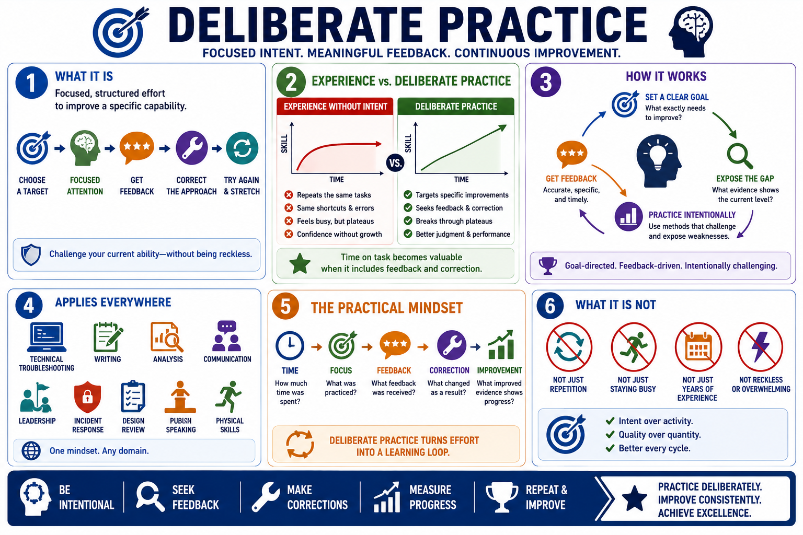

What Is Deliberate Practice?
Connecting to LMS... Progress: in progress

Narration
Deliberate practice is focused, structured effort designed to improve a specific capability. It is different from simply repeating a task, staying busy, or accumulating years of experience. The defining feature is intent. The learner chooses a target, works on it with attention, gets feedback, corrects the approach, and tries again under conditions that stretch current ability without becoming reckless or unmanageable.
Many people improve early in a skill because ordinary experience teaches the basics. After that, progress often slows. A person can keep performing the same task for years while repeating the same shortcuts, blind spots, or errors. Time on task becomes valuable when it includes meaningful feedback and correction. Without that, experience may create fluency and confidence without creating better judgment or stronger performance.
Deliberate practice is goal-directed, feedback-driven, and intentionally challenging. It asks, what exact capability needs to improve, what evidence will show improvement, and what kind of practice will expose the gap? This makes it useful in many domains: technical troubleshooting, writing, analysis, communication, leadership, incident response, design review, public speaking, and physical skills.
The practical mindset is simple but demanding. Do not ask only how much time was spent. Ask what was practiced, what changed, what feedback was received, and what correction happened next. Deliberate practice turns effort into a learning loop. It gives improvement a structure instead of hoping that repetition will eventually become expertise on its own.